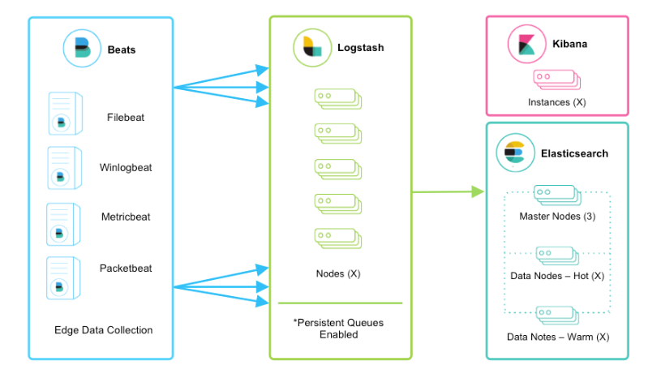

The Elastic Stack
Table of contents
Overview
The Elastic Stack (or ELK stack) consists of open source products that were created by Elastic that ingests data from any source and any format, and allows users to search, analyze, and visualize the data in real time.
Enigma Glass has been built using this software stack.
The ELK Stack consists of four main components:

Beats
Beats are small agent processes that can run on edge devices that collects logs and sends them to Logstash.
Logstash
Logstash is Elastics log ingestion pipeline. It can collect logs from the server it’s running on, and it can also ingest logs from beats that exist on edge devices and may not have direct access to the Elasticsearch cluster.
Kibana
Kibana is the visual layer of Elastic that provides a user interface for Elastic and a method of visualising data.
Elasticsearch
Elastic search is a distributed, JSON-based search and analytics engine. The key store database backend begane as a fork of Apache Lucene, and it still supports querying with the Lucene language in addition to KQL (Kibana Query Language).